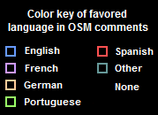

Set these filters or move the map to narrow the contributor list.

Contributors in current map view: 0
Sort by:
Loading...
Set these filters or move the map to narrow the contributor list.
Contributors in current map view: 0